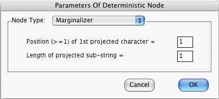

When you press the OK button in this window, the computer checks that
If these conditions are satisfied, the above window closes. Furthermore, the states and amplitudes stored in memory for the focus node are changed. If the conditions are not satisfied, the above window remains open, the states and amplitudes are not changed, and a warning message appears on the screen.
Let m[P1, L] be an operator which acts on any string STR, and yields the substring consisting of the elements of STR at positions from P1 to P1+L-1. (We assume that the length of STR is >= P1+L-1). For example, if P1=2, L=3, and STR = apple, then m[2,3]apple = ppl .
Let P1 be your entry to the first field of the above window, and let L be your entry to the second. P1 and L must both be positive integers. Quantum Fog defines the set of states of the marginalizer to be { m[P1,L]STR : for all STR such that STR is the name of a state of the parent node}. For example, suppose that the set of states of the parent node is { apple, banana, mango, fig }. Furthermore, suppose that P1=2, L=2. Since m[2,2]apple = pp , m[2,2]banana = an , m[2,2]mango = an , m[2,2] fig = ig , Quantum Fog will define { pp , an , ig } to be the set of states of the marginalizer. As another example, suppose that the states of the parent node are the 32 binary numbers 00000, 00001, ..., 11111. Furthermore, suppose that P1=2, L=1. Then Quantum Fog will define the states of the marginalizer to be 0 and 1.
When the state of the parent node is STR, Quantum Fog assigns unit amplitude to state m[P1, L]STR of the marginalizer, and it assigns zero amplitude to all other states of the marginalizer. In the fruit example presented above, when the state of the parent node is apple , Quantum Fog assigns unit amplitude to state pp , and zero amplitude to states an and ig . In the binary numbers example presented above, when the state of the parent node is 01011, Quantum Fog assigns unit amplitude to state 1, and zero amplitude to state 0.
More information about Marginalizers can be found in the document entitled "Quantum Fog Library Of Essays" that accompanies this manual.